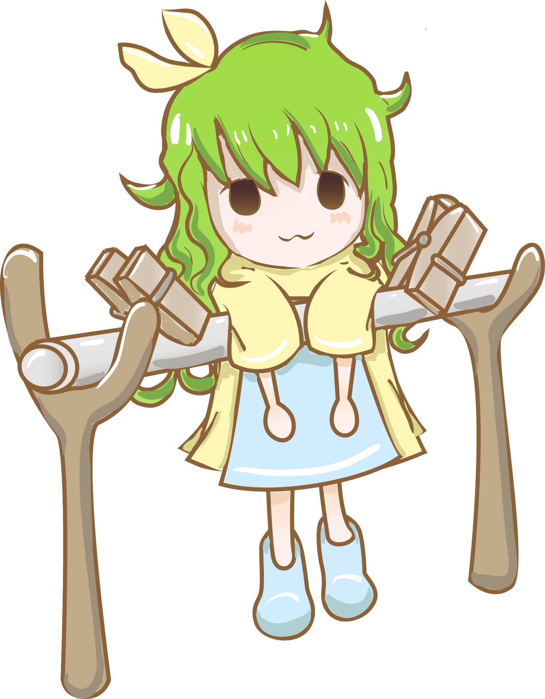

<aside class="sidebar">

  <div class="sidebar-container">
    <div id="head-picture-warper">
		
	</div>
    <div class="sidebar-logo">
      <a href="{{site.baseurl}}/" class="logo">{% if site.name %}{{site.name}}{% else %}Fresh{% endif %}</a>
    </div>

    <menu class="sidebar-menu">
      <li class="menu-items"><a id="about-button" class="menu-links" href="{{site.baseurl}}/about/">About</a></li>  
      <li class="menu-items"><a id="sunny-button" class="menu-links" href="{{site.baseurl}}/Sunny">Sunny &nbsp;|&nbsp;
	  {% for category in site.categories %}
	  {% if category[0] == "Sunny" %}
	  {{ category | last | size }}篇</a></li>
	  {% endif %}
	  {% endfor %}
	  <li class="menu-items"><a id="tree-button" class="menu-links" href="{{site.baseurl}}/Tree">Tree &nbsp;|&nbsp;
	  {% for category in site.categories %}
	  {% if category[0] == "Tree" %}
	  {{ category | last | size }}篇</a></li>
	  {% endif %}
	  {% endfor %}
    </menu>

    <div class="sidebar-social">                   
      <li class="social-items"><a title="E-Mail" href="mailto:{{site.email}}" target="_blank"><i class="social-icons fa fa-fw fa-envelope"  aria-hidden="true"></i></a></li>
      <li class="social-items"><a href="https://github.com/{{site.github}}" class="social-links"><i class="social-icons fa fa-github" aria-hidden="true"></i></a></li>
    </div>

  </div>
</aside>
